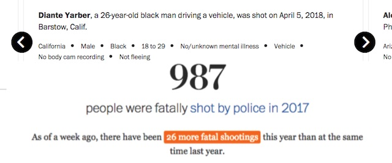

2018-05-07 08:00

This is a story that could have been predicted in 2010.
On April 4th, Diante Yarber was gunned down in a hail of bullets in a Wal*Mart parking lot by four Barstow policemen. Yarber was killed and two others who were sitting in the car were seriously injured. The Washington Post added Diante to its growing list of police victims for 2018, noting that we are already ahead of last year’s figures by 26 fatalities.
Police claimed Yarber had stolen the car he was driving; it turned out to be his cousin’s. Police claimed he rammed two of their cruisers; but Yarber’s car was not found to have been in a collision, though it was destroyed by a fusillade of bullets. Police offered no reason for trying to kill four black passengers for a supposed property crime. But then nothing about the police account of the story makes much sense.
I’m asking you to sign a petition to demand District Attorney Michael Ramos charge the four Barstow police officers with murder.
As an elected official with the sworn duty to pursue justice, DA Ramos must indict Jose Barrientos, Vincent Carrillo, Matthew Allen Helms – and Jimmie Alfred Walker, who screamed racial slurs and threatened Diante’s life just before murdering him.
Walker has a history of racially motivated violence. In 2010 sheriffs were called to the scene for a disturbance in Hesperia, San Bernardino County, and after their arrival Walker used racial slurs in their presence. After an initial plea deal, Walker was charged with assault and a hate crime, and then fired.
And that should have been the end of Walker’s license to kill. But following arbitration the racist officer was rehired and paid nearly $200,000 in back pay — only to escalate his hate into murder eight years later.
Enough! There must be a reckoning for Diante Yarber’s death.